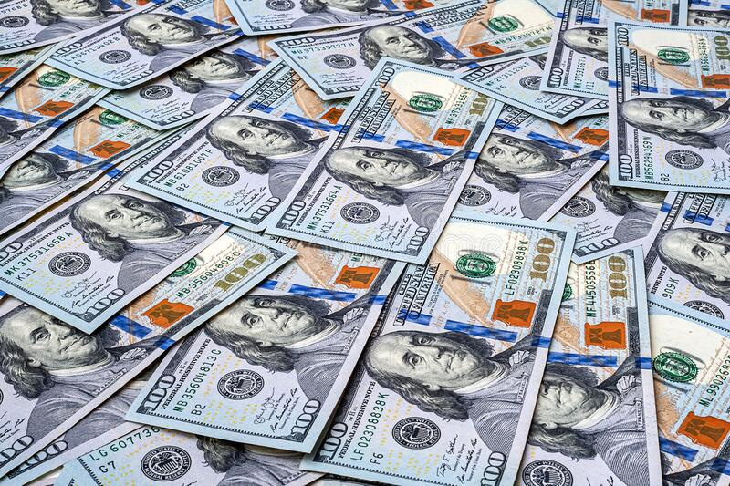
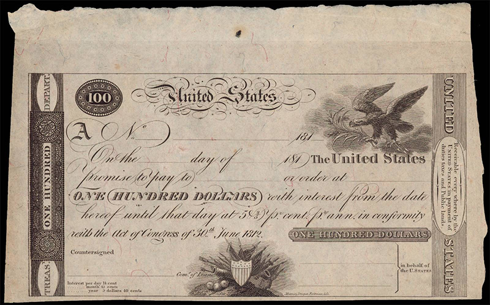
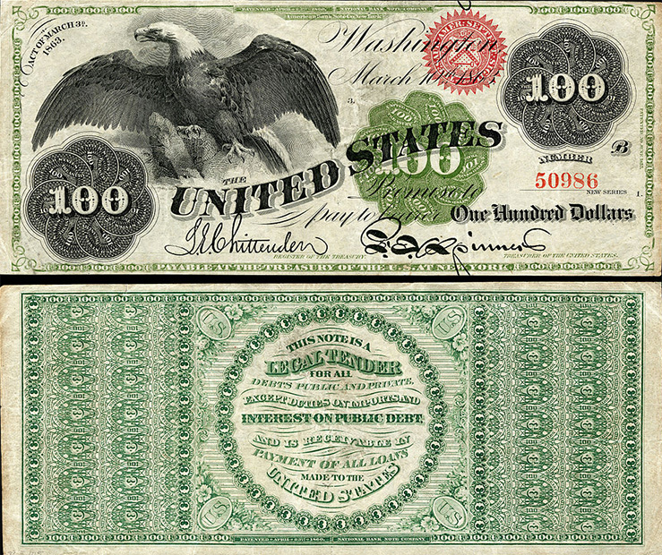
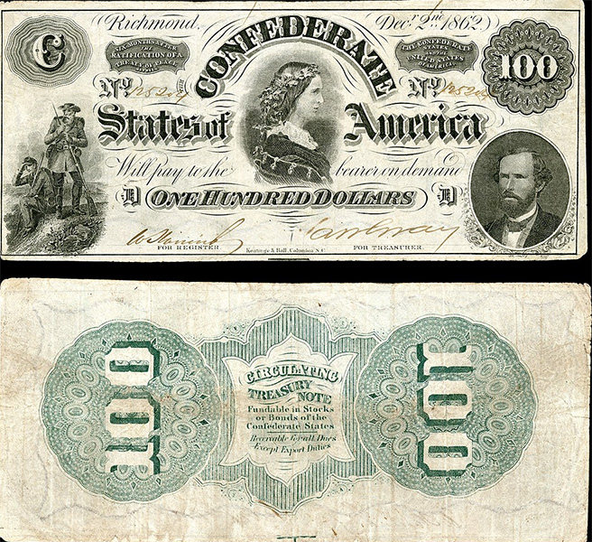
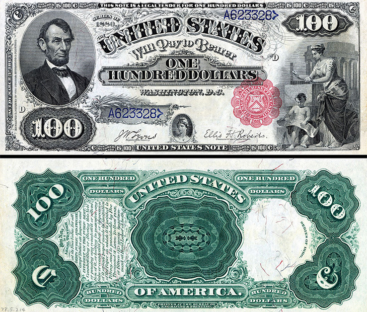

Банкнота сто долларов США: история на долларовых купюрах, как отличить фальшивку
Наверное, не так уж много найдётся людей на земном шаре, которые признались бы, что не представляют, как выглядит стодолларовая банкнота. Американскую валюту и её самый крупный номинал растиражировали культовые фильмы и настенные граффити. Она мелькает в аналитических обзорах и экономических новостях. Выписывая перспективы обменного курса, чаще всего статью иллюстрируют не банкнотой номиналом 1 доллар, а именно «соткой».

Удивляться этому не приходится, так как по подсчётам аналитиков к 2017 году находящиеся в обращении стодолларовые купюры составили сумму в триллион с четвертью долларов. Их количество продолжает стремительно увеличиваться. Считается, что около 70% всех купюр США приходится на долю ста долларов. Если внутри страны лидерство по частоте использования удерживает «двадцатка» (а банкноту 2 доллара почти и не встретить в обороте), то за пределами США предпочтение отдают именно сотне. Доллар США привлекает людей тем, что ни разу не девальвировался, поэтому он занимает большую долю в валютных резервах мировых держав и «финансовых подушках» отдельных граждан. Кроме того, американские банки принимают к обмену даже потрёпанные доллары старых выпусков (если сохранившаяся площадь банкноты составляет 55% и более).
Как менялся внешний вид банкноты

Датой рождения первой стодолларовой банкноты считается 1862 год. Однако номинал 100 долларов присутствовал на американских денежных знаках и ранее. Примером можно привести казначейский вексель 1812 года. Это был период, когда жители США в качестве средства платежа использовали только монеты, а организации, исполняющей роль центрального банка, не существовало. С началом англо-американской войны правительство США для покрытия возросших расходов решило выпустить казначейские векселя. Однако это ещё не полноценная банкнота, а краткосрочное долговое обязательство, предполагавшее вместе с возвратом суммы выплату небольшого процента. Выпуск подобных казначейских билетов строго регулировался. Хотя общая эмиссия составила 37 миллионов долларов, в обращении одномоментно не могло находиться билетов на сумму более 17 миллионов долларов. Подобным инструментом покрытия расходов казны пользовалась и Российская империя, выпускавшая собственные казначейские билеты с 1831 года.

Начавшаяся гражданская война породила множество бон, номиналом которых стали 100 долларов. Например, регламентированные законом от 17 июля 1861 года процентные векселя со сроком погашения в течение трёх лет. Рассчитаться за сделку ими было невозможно, но для уплаты таможенных пошлин их принимали. Появившаяся в 1862 году банкнота (Legal Tender Note) по оформлению была схожа с этими бумагами. Однако в качестве сюжета использован белоголовый орлан, а не портрет генерала Уинфилда Скотта или аллегорические картины с оружейниками и совместной работой фермера и механика. Выше показана 100-долларовая банкнота 1863 года, совпадающая дизайном с предыдущей. Разнятся даты, регламентирующие эти эмиссии (на фото в левом верхнем углу обозначено «3 марта 1863» в отличие от «25 февраля 1862», когда федеральное правительство США приняло соответствующий акт). В соответствии с этим же мартовским актом печатают и золотой сертификат на 100 долларов с таким же белоголовым орланом. Однако его оборот не зелёный, а оранжевый.

Свои стодолларовые банкноты появились и у конфедеративного правительства. Выше в качестве примера показана банкнота, выпущенная в количестве 628 640 экземпляров. В её центре «Королева Конфедерации» - Люси Пикенс, бывшая символом высшего света южных штатов. В нижних углах банкноты отпечатаны солдаты конфедеративной армии и генерал Джордж У. Рэндольф. Эмиссия была децентрализованной. Каждый банк мог печатать свои банкноты под собственную ответственность, что затрудняло расчёты и не добавляло доверия к новым деньгам. Так как южные штаты поддерживали рабство, на некоторых стодолларовых купюрах изображался рабский труд на плантациях.

На аверсе 100 долларов США образца 1869 года изображён портрет Авраама Линкольна. На этой же стороне женщина с угольником и мальчуган с чертежом представляют аллегорию, символизирующую архитектуру. Юридически это не совсем банкнота в чистом виде, так как эмитентом указано казначейство («TREASURE NOTE»). Выше мы показываем переработанный вариант этой купюры, где эмитент исправлен («UNITED STATES NOTE»). Кроме того, в этой версии значительно усложнён рисунок оборотной стороны для противодействия подделкам.